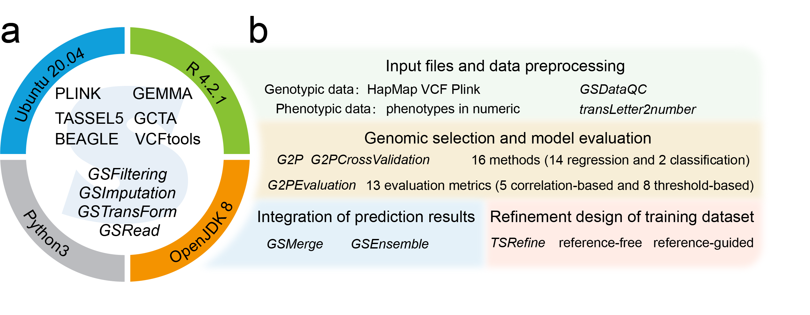

G2P

G2P (Genotype to Phenotype) is an integrative environment in form of Singularity container, which not only contains a library of 16 state-of-the-art GS models and 13 evaluation metrics for model evaluation and selection but also provides several stand-alone software and easy-to-use functions for data preprocessing, population analysis, integration of prediction results from multiple models, and refinement of training datasets. G2P provides a comprehensive environment for genomic selection to facilitate the comparison and selection of appropriate model. G2P not only was developed and packaged in a Singularity container, allowing easy installation and upgrade, but also was accessible as an stand-alone R package.
- Installation of G2P container for installation and quick start of G2P.
- Input files and data preprocessing for functions of input files and data preprocessing.
- Genomic selection and model evaluation for functions of genotype-to-phenotype prediction.
- Integration of prediction results for functions of multiple models predciton results integration.
- Refinement design of training dataset for function of training dataset refinement and design.
Github: G2P
G2P container download link: G2P.sif
R package download link: G2P_1.0.tar.gz
QuickStart: G2P QuickStart
Contact us: qchengray@cau.edu.cn
Note: cademic users can download directly, industrial users first contact us.